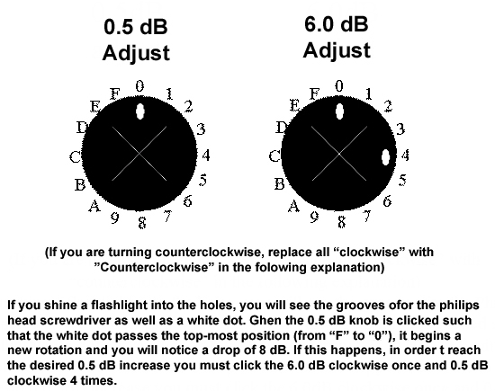
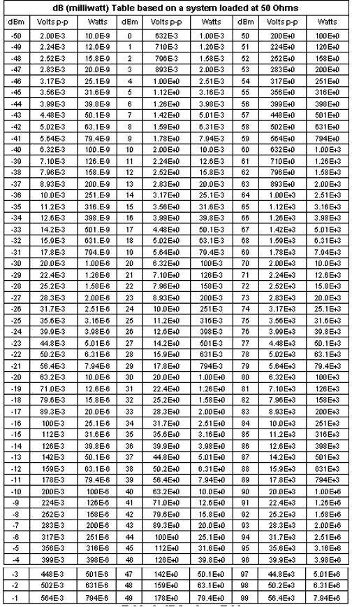

Operating Documentation
Direction 5440000, Rev# 5
Signa HDxt Service Methods
Module Version 1.0, Version Date 5/3/07
Operating Documentation |
| Required Persons | Preliminary Reqs | Procedure | Finalization |
|---|---|---|---|
| 1 | Not Applicable | 2 hours | Not Applicable |
Special tools consideration depending on the calibration type undertaken:
| Item | Quantity | Part Number |
| Calibrating Using Oscilloscope Method : | ||
| Oscilloscope with 50 Ohm Impedance and >150MHz of Bandwidth | 1 | - |
| RG214 Cable | 1 | - |
| BNC Cable | 1 | - |
| 30dB High Power Attenuator (OR 40dB Power Coupler) (See Note) | 1 | - |
| 40dB attenuator (OR 30dB attenuator plus 50 Ohm Dummy Load) (See Note) | 1 | - |
| Calibrating Using Power Meter Method: | ||
| RF Power Measurement Kit | 1 | 2372868 |
| 50 Ohm Dummy Load | 1 | - |
| Note: If you use the 40dB Power Coupler, you must use the 30dB attenuator plus 50 Ohm Dummy Load. | ||
| Item | Qty | Effectivity | Part# | Manufacturer | |
|---|---|---|---|---|---|
| Small Philips head screwdriver (size #0 or #00) with at least 2 inch length | 1 | - | - | - | |
| ||||
| FATAL ELECTRIC SHOCK HAZARD !! | ||||
| FATAL ELECTRICAL VOLTAGES THROUGH OUT THE MNS CABINET. | ||||
| TO PREVENT FATAL ELECTRIC SHOCK, MAKE SURE THE MNS RF AMPLIFIER IS DISABLED WHEN CONFIGURING THE CALIBRATION TOOLS. |
| ||||
| PERSONAL INJURY!! | ||||
| POSSIBLE RF BURN WHEN DISCONNECTING HELIAX CABLES FROM THE RF AMPLIFIER. | ||||
| VERIFY THAT THE SCAN DESKTOP ICON DISPLAYS THE “IDLE” MESSAGE AND THE UCERD SWITCH IS IN THE "DISABLE" POSITION. |
| ||||
| Property damage to coils not removed from the magnet bore during body scans. Verify that the scan desktop icon displays the “idle” message and the UCERD switch is in the "disable" position. | ||||
| ||||
| Possible equipment damage to rf amplifier connected with an improper load to its output. Do not operate the rf amplifier with an improper load connected to its output. Doing so may permanently damage the amplifier | ||||
Disabling T/R Drive Error Condition
Verify the system is idle and all coils have been removed from the magnet bore.
Remove the front cover of the RF Accessories Cabinet.
On the front of the driver module, set the T/R switch to “Disable”. This will disable T/R fault reporting. See Illustration 1.
| NOTE: | HV, DD, and MC should remain set to Enable. |
Illustration 1: Driver Module Switch

Disconnect T/R bias cable from the RF Amplifier (J11 on AMT amplifier or J14 on CPC amplifier).
Setup the measurement system according to one of the three diagrams in Illustration 3.1
Illustration 2: Schematic Of Different Set-Ups For Calibrating The MNS Amp

Power Attenuator Method:
Using an RG214 cable, connect the RF output of the amplifier to the input of a high-power attenuator.
Connect additional attenuation to the output of the high power attenuator until a total of 65-70dB of attenuation is attained.
Using a BNC cable, connect the output of the attenuators to the input of the oscilloscope.
Set the oscilloscope to full bandwidth (>150MHz) and DC 50 Ohm input impedance.
Coupler Method
Connect the RF output of the amplifier to the input of power coupler.
Connect the output of the power coupler to a suitable 50 Ohm Dummy Load.
Connect additional attenuation to the coupled output of the power coupler until at total of 65-70dB of attenuation is attained.
Connect the output of the attenuators to the input of the oscilloscope.
Set the oscilloscope to full bandwidth (>150MHz) and DC 50 Ohm input impedance.
For the Power Meter Method, Setup according to the directions for MNS Max RF Power Meter (Watt Meter) Setup..
Setup the scan parameters as per Table 1.
Table 1: Scan parameters
| Step | |
| 1 | Click on [New Pt] |
| 2 | Id: geservice<Enter> |
| 4 | Weight: 300 lbs |
| 5 | Set Patient Protocols to Service |
| 6 | Scroll through the protocol field until you find the protocol [0.41-3T apb cal] |
| 7 | Select [Series 2, Head] |
| 8 | [Accept] |
| 9 | Set Landmark |
| 10 | [Save Series] |
| 11 | Select [Research Options] with the mouse cursor and right click. Select [Display CVs] from the drop down menu |
| 12 | Set the value of calmode to 5 and hit <Enter> |
| 13 | Set the value of mns_xmit to 1 (for MNS) and hit <Enter> |
| 14 | Set the value of spec_nuc to 31 (for Phosphorous 31) and hit <Enter> |
| 15 | Select [Setup Params]. Set the TG to 0. [Done] |
| 16 | Click on [Manual Prescan] |
| 17 | Increase the TG to 50. If the scan stops due to a peak power fault, reduce the TG to 0 and continue with calibrations at a TG of 0 or slightly above. |
Calibrate the Amplifier
a. For CPC 4kW Calibration
The manual prescan should already be running. Measure the peak envelope power using the oscilloscope (power attenuator method or coupler method) or power meter method.
For ease of calculation a Excel tool is available. Enter the measurement data into the respective calculator.
If the gain adjustment is positive, turn the amplifier gain potentiometer adjustment clockwise. The amplifier gain potentiometer is located at the back of the CPC Amplifier.
You may adjust the gain of the CPC amplifier while the scan continues to run.
Increase the TG to 200. When 4kW is measured at TG=200, you have successfully calibrated the amplifier. If the amp trips before achieving 4kW:
| NOTE: | To know what peak-to-peak value you should be looking for, refer to Illustration 5. |
Back off the gain pot about 1/8 of a turn.
Allow the amplifier time to recover
Restart manual prescan.
Select [Scan TR]
Repeat this until you have set the amp operating at its peak output at a TG of 200.
| NOTE: | It is normal for the CPC display on the front of the amp to be fluctuating between +/-10% of actual power due to slight differences in oscilloscopes, attenuators, and amplifiers. |
Reset the TPS.
For AMT 8kW Calibration
Remove the front cover of the AMT amplifier (this will take about 8 minutes as there are 50+ screws to remove). When the covers are removed, you will see two holes for gross (6.0dB) and fine (0.5 dB) adjustments as pictured in Illustration 3 and Illustration 4.
| NOTE: | NOTE: It is possible that these two holes will be covered with an external screw. If this is the case, simply remove the screw so that your amplifier looks like the one in Illustration 3. |
Illustration 3: AMT Amplifier with covers removed. Indicators point to adjustment points

Illustration 4: AMT Amplifier detail of dB Adjustment

The manual prescan should already be running. Measure the peak envelope power using the oscilloscope (power attenuator method or coupler method) or power meter method.
Enter the measurement data into the respective calculator.
[STOP] or [PAUSE] the manual prescan before adjusting the gain controls on the AMT amplifier.
If the calculator specifies an adjustment for the 6.0dB control, insert a long Philips screwdriver, size #0 or #00, in the 6.0dB adjuster and turn the control clockwise the specified number of clicks.
Restart the manual prescan and measure the power. Use the calculator provided to recalculate the remaining gain adjustment.
STOP or PAUSE the manual prescan before adjusting the gain controls on the AMT amplifier.
Insert a Philips screwdriver in the 0.5dB adjustment control and turn the specified number of turns. *** IF the gain of the system jumps by about 8dB when adjusting the 0.5dB control that indicates that it has been rotated past its zero point as per Illustration 4. This is easy to fix:
If you were DECREASING gain (Clockwise turns), then turn 4 more clockwise clicks on the 0.5 control and 1 clockwise click on the 6.0dB control.
If you were INCREASING gain (Counterclockwise turns), then turn 4 more clicks counterclockwise on the 0.5dB control and 1 counterclockwise click on the 6.0dB control
Repeat steps Step 7.b.vi, Step 7.b.vii, and Step 7.b.viii as necessary to achieve the correct gain.
Once the calculated gain adjustment is almost zero, set the TG to 200 and verify full power output without peak power faults. ***You may need to add one additional clockwise click of the 0.5dB control if the system is sensitive to faults at the 8kW peak power level.
When 8kW is measured on the oscilloscope at TG=200, you have correctly calibrated the amplifier.
| NOTE: | To know what peak-to-peak value you should be looking for, refer to Illustration 5. |
Put the front cover back on the AMT amplifier.
Reset the TPS.
Illustration 5: dB Look-up Table
